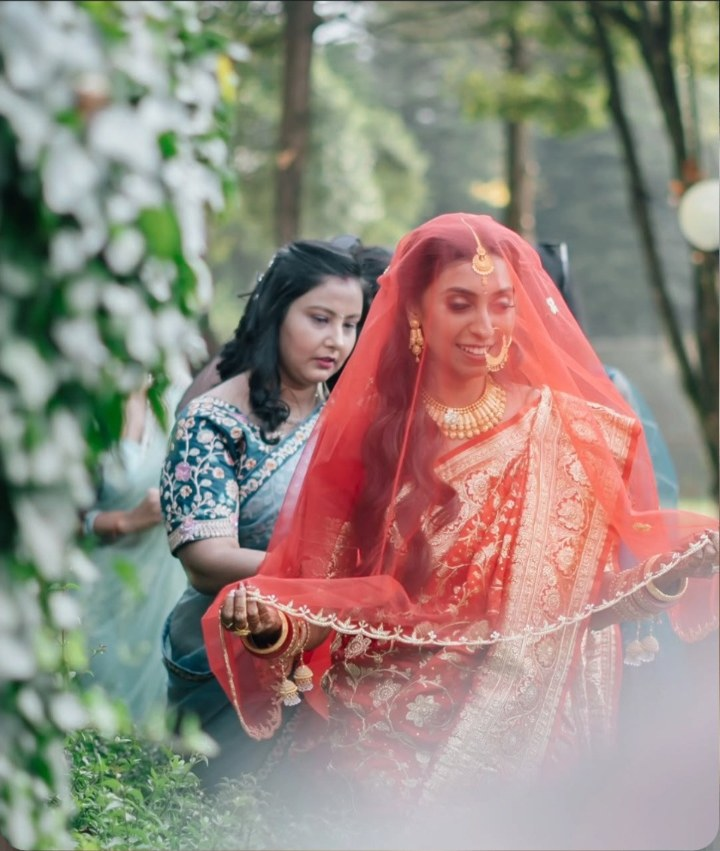
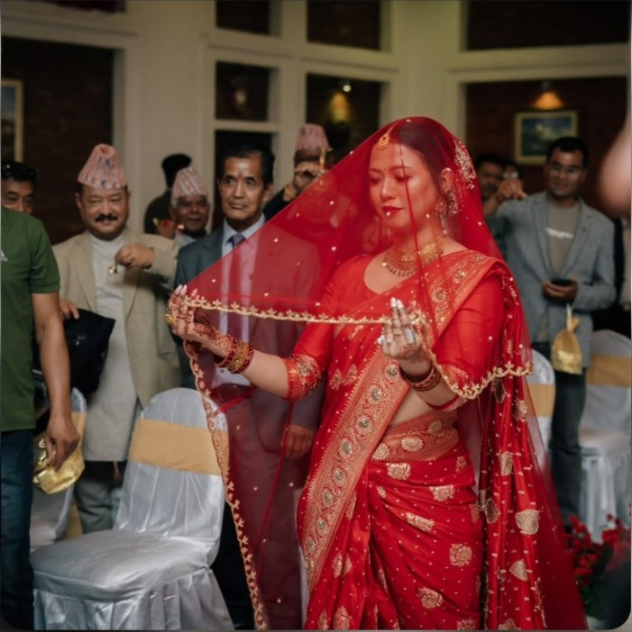
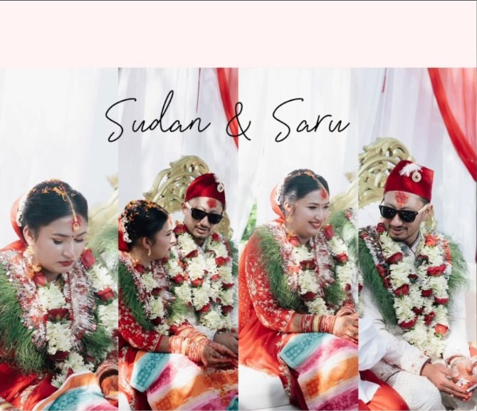
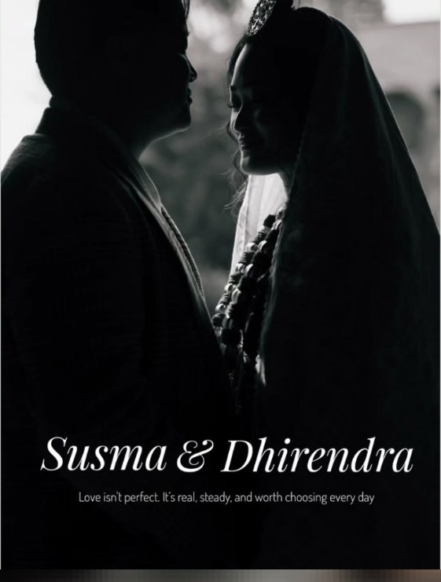
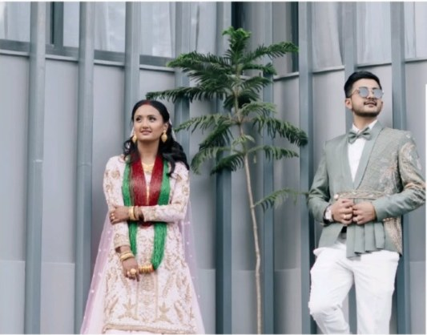
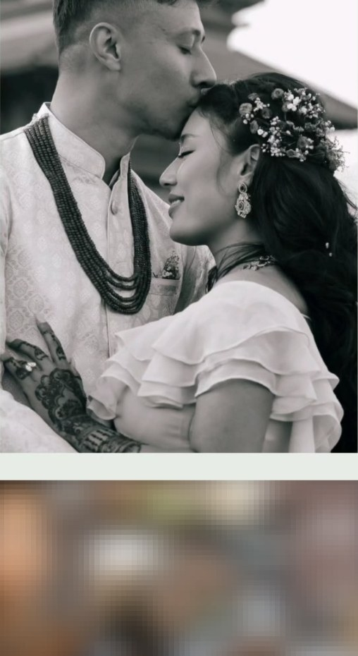

WEDDING & LIFESTYLE PHOTOGRAPHY
For the moments
that stay with you.
The quiet glances. The happy tears. The beautiful in-between. We turn your once-in-a-lifetime moments into forever.
REAL PEOPLE. REAL FEELINGS. FOREVER STORIES.

EST.PSMEMORIES
IN FRAME
IN FRAME
01 / A DAY TO REMEMBERKATHMANDU · NEPAL
LOVE, IN EVERY FRAME
01 — A LITTLE ABOUT US
We don't just
take pictures.
We feel them.
Every photograph holds a feeling. Our work is about finding the honest beauty in your story and preserving it with care.
From the first look to the last dance, from the grand celebrations to the soft, fleeting moments — Photo_Spectrum captures the magic exactly as it feels.
Tell us your story ↗THOUGHTFUL FRAMESTIMELESS FEELINGSYOUR STORY, ALWAYS
02 — SELECTED STORIES
A gallery of feelings.
A few moments we've had the joy
of keeping close.
01The beginningWEDDING · PORTRAIT↗

02Traditions & tendernessWEDDING · CEREMONY↗
03Side by sideWEDDING · MOMENTS↗
04In the quietCOUPLE · EDITORIAL↗
05Jagadish & RajaniWEDDING · STORY↗
06Forever starts hereCOUPLE · PORTRAIT↗MORE STORIES, MORE MEMORIES — FIND US ON INSTAGRAM ↗
“
Some moments pass.
Some moments become forever.
03 — LET'S CREATE SOMETHING MEANINGFUL
Have a story
for us?
We'd love to hear about your day, your plans, and all the little moments you want to remember.
Chat with us on Instagram ↗